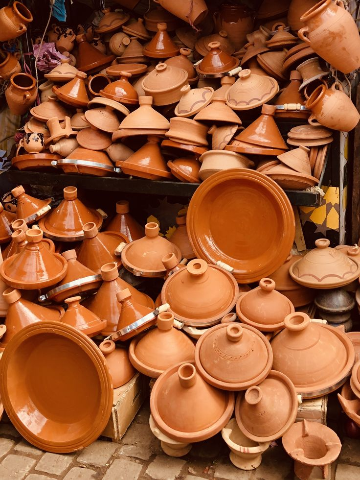

Des mains, des liens, des possibles.
COOPÉRER · TRANSMETTRE · FAIRE CONNAÎTRE
À la rencontre des coopératives artisanales marocaines. Taawon rend visibles celles et ceux qui façonnent les matières et font vivre les savoir-faire.

36
coopératives
640
artisans & artisanes
8
régions représentées
180
produits présentés
Repères illustratifs du réseau · données de démonstration, non vérifiées.
Six façons de faire, mille façons de raconter
La matière nous rassemble.
Du fil à la terre, du végétal au cuir : explorez des gestes ancrés dans les
territoires, ouverts sur le présent.


À la une
Derrière chaque pièce, un collectif.

Tissage
Tazrout
↗︎
Aït Ourir · Marrakech-Safi
Des tapis de laine tissés à la main, porteurs des récits du Haut Atlas.
Rencontrer la coopérative ↗︎

Poterie
Terres de Safi
↗︎
Safi · Marrakech-Safi
Une terre locale façonnée en pièces utiles, sobres et vivantes.
Rencontrer la coopérative ↗︎

Argan
Argan Tifaout
↗︎
Tiznit · Souss-Massa
Une huile d’argan issue d’un savoir-faire collectif transmis entre femmes.
Rencontrer la coopérative ↗︎